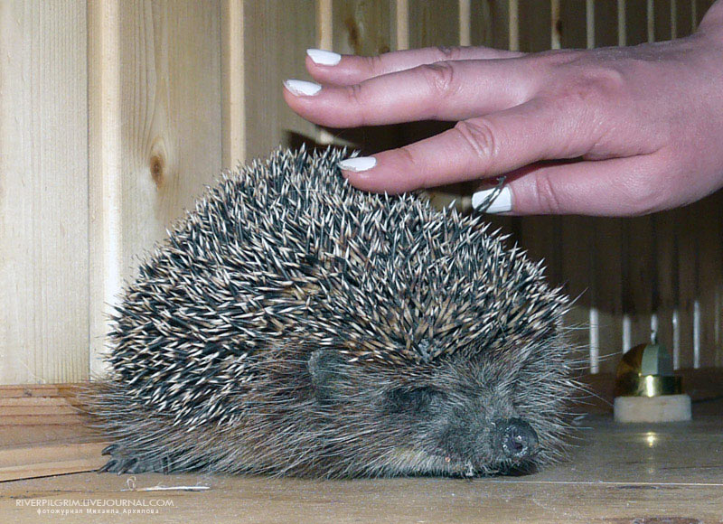

Чем накормить любимого ежа
Всеми любимый, знакомый каждому из нас с детства, симпатичный колючий ежик – герой многих «мультиков» и сказок, на территории нашей страны встречается практически повсеместно. Его не трудно увидеть в лесу, или перебегающим дорогу, даже в городской черте можно встретить усыпанный иголками бегущий «комочек». Поймать, взять в руки этого зверька не составит большого труда, с этим справится даже ребенок. Кто-то, не в силах расстаться с этим симпатягой, приносит ежа домой, надеясь «превратить» его в домашнего любимца. У многих на этом этапе возникают определенные трудности, поскольку, содержать колючего красавца гораздо сложнее, чем просто поймать. Вот здесь и понадобятся определенные знания о жизни ежей.

Заблуждается тот, кто думает, что все ежи одинаковые – усыпанная иголками спина, острая мордочка, выглядывающая из-под иголок, теплое нежное брюшко. На самом деле в природе встречаются несколько видов ежей: обыкновенные, ушастые, белобрюхие и некоторые другие. Все они являются представителями семейства Ежовых из отряда Насекомоядных. Уже из названия отряда можно сделать некоторые выводы о гастрономических пристрастиях этих симпатичных зверьков.
В природных условиях ежи питаются в основном кормами животного происхождения: лягушками, червями, насекомыми, моллюсками, но никак не яблоками и грибами, вопреки сложившемуся стереотипному мнению. Не прочь зверь разорить птичьи гнезда, расположенные на земле, и побаловать себя добытыми яйцами. В периоды обильного лета майских жуков, ежик любит полакомиться этим насекомым, за день легко съедая до 80 штук вредителей. Этим он приносит большую пользу окружающей среде.
В условиях домашнего содержания ежа накормить не так уж и трудно. Ест он, практически, ту же пищу, которую потребляет человек, его невзыскательность к питанию упрощает содержание питомца в неволе. Мясо, рыба, каша, различные мясные бульоны, другие корма, находящиеся под рукой – все это колючий зверек будет съедать с удовольствием. Особо любимым блюдом может быть вареная печенка с добавлением кусочков мяса. Мясо дают как в сыром виде (его зверек поедает охотно), так и отварное. Ценным продуктом является свежая рыба и рыбные отходы, рыбные продукты не первой свежести лучше исключить из рациона, поскольку они могут вызвать отравление животного. Не надо забывать об особом отношении ежей к молоку, как можно чаще баловать их этим лакомством.
В природе активным периодом жизнедеятельности ежей является темное время суток, не изменяют они своим привычкам и в домашних условиях. А зимние холода наш колючий любимец проводит в спячке, пробуждаясь только с весенним теплом. Очень важно, чтобы зверек встретил стужу в довольно упитанном виде, иначе ему трудно будет перенести зиму.